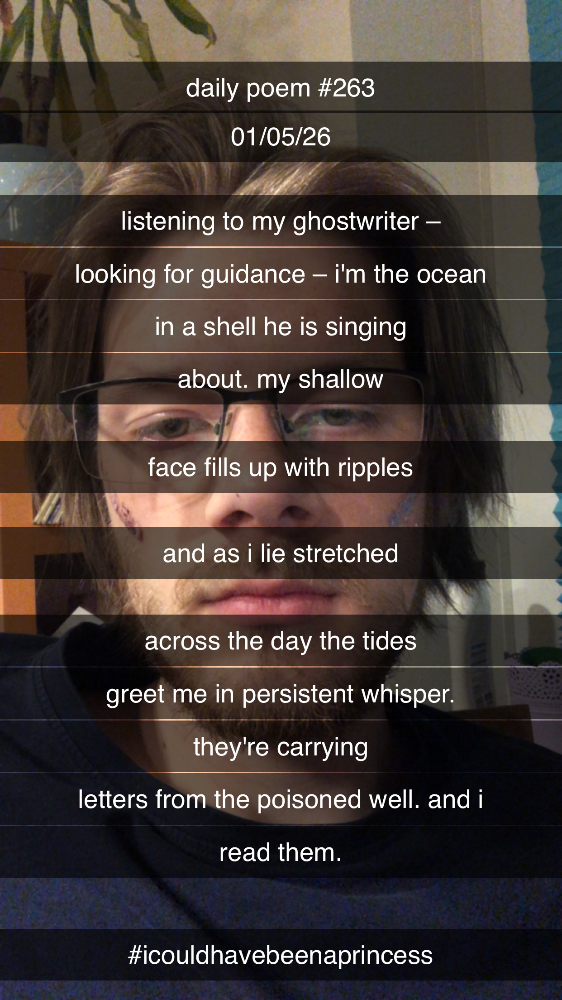

Listening to my ghostwriter
[263]Listening to my ghostwriter –
looking for guidance – I'm the ocean
in a shell he is singing
about. My shallow
face fills up with ripples
and as I lie stretched
across the day the tides
greet me in persistent whisper.
They're carrying
letters from the poisoned well. And I
read them.

Anmerkungen
alle guten formulierungen aus: from a poisoned well
truly one of my favorites
elliott smith is the goat
i mean, that first line alone: "i'm a ghostwriter for an ocean in a shell from the poison well"
duuuude